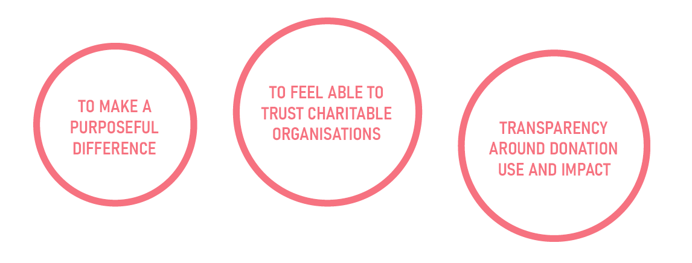

The devastating bushfire crisis of 2019 – 2020 was met with a compelling philanthropic effort, as Australians around the country donated what they had to support the recovery of victims. Though given with good intentions, charities were overwhelmed by many unsolicited donations which hampered, rather than helped the recovery effort.
Based on this situation, and for all recovery efforts in times of crises, IBM iX posed a question asking, “How can we empower citizens to make a productive impact in times of need from useful donations that don’t become a burden to our response teams?”
With such a broad brief, we constructed a plan and conducted primary research to gain insight into both charity and donor perspectives for the situation at hand. A total of 11 participants took part in our research.
Our objective outlined our aim and how we wanted to use this research in response to the upper level brief.
“We aim to understand what motivates members of the public to donate resources in times of crisis, as well as investigate what resources are needed by those impacted. From this, we hope to empower individuals to make a productive impact during these times of need.“
Breaking this objective down into questions helped us clarify targeted segments of information we hoped to understand.
Based on the focus of our research, we decided to prioritise understanding the experiences and motives of donors. Conventional research methods such as questionnaires would limit our ability to tap into their underlying rationale to give. Consequently, context-mapping, a generative technique, was chosen as we wanted to encourage participants to reflect, re-feel and share stories about their experiences.
We also hoped to hear from representatives of organisations involved in supporting recovery efforts, so we conducted phone interviews to learn how charities perceived the impact of unsolicited donations.
A total of nine individuals who contributed physical goods or money towards bushfire recovery participated in a context-mapping. Prior to the session, we encouraged them to complete simple seven-day sensitising exercises, which we designed to stimulate thinking about their donation experiences in preparation for the context-mapping session.
During the session, we had prepared two activities – a Collage and Cognitive Map.
For the collage, participants interpreted and pasted ambiguous images around the dual axis, 'LIKE' & 'DISLIKE', 'PAST' & 'PRESENT', in reflection of their experiences.
The cognitive map aimed to reflect the journey of the experience from ‘START’ to ‘END’. Participants pasted simple icons and annotated them with their emotions and decisions along the way.
After completing both activities, we asked participants to share what their creations represented and how they felt about their experiences. A facilitator, either myself or a research team member, would ask questions to keep conversation flowing.
The key to gathering insights during these sessions were to listen to the stories the participants had to tell, rather than the physical creations that they had made. We felt the sessions were highly successful because participants felt comfortable, sharing stories and engaging with others.
Two thirty-minute interviews were conducted – one with a representative of a charitable organisation, and one with a community club. Both organisations were involved in collecting physical and monetary donations for victims in bushfire affected areas.
Our list of questions was semi-structured, meaning we had key questions to ask, but also the potential to follow a tangent if the interviewee provided an interesting insight. This enabled us to go beyond a participant’s surface-level response, tapping into underlying motivations and frustrations.
By the end of our research, we had amassed much qualitative data, all voicing a diverse range of concerns from donors and charitable organisations. To make sense of it all, we took a bottom-up approach, collecting similar expressions and forming statement cards with key quotes from the interviews and context-mapping transcripts. Each card was also given a summarised interpretation, for upper level distinctions.
In telling the story of our findings, we developed a research visualisation, summarising key insights for ease of communication with other stakeholders.
From the research we had gathered, it was clear what donors wanted:
Donors who doubted the cause tended to form negative perceptions towards the authenticity of charities and hence demonstrated reluctance to contribute valuable time and resources at their own expense. Addressing such concerns would consequently improve donor behaviour and perception of charity efforts.
In line with these findings, we created a second brief that stated our focus area within the overarching brief provided by IBM iX.
"We strive to ensure that individuals contributing to recovery efforts for victims of natural disasters can donate physical and financial goods with the confidence that their contributions are being utilised to bring about impactful change to affected communities. Providing a sense of trust between donors and charities through facilitating effective communication between them will lift the haze of uncertainty clouding donor mindset hence empowering them to make a productive impact in times of need."
The brief called for an experience that carefully considered both digital and spatial elements. Through design sprints, we came up with dozens of one-line ideas but pursued four to elaborate into experience concepts. We then storyboarded scenarios of how we perceived each to pan out.


With a Pugh Selection Matrix, we rated our concepts based on a selection of highly relevant criteria. Then we whittled our options down to one, based on the matrix score as well as our judgement on how well it responded to the briefs. A part of the development process involved adding features we thought were important, taking some ideas from the discarded designs as well as removing superficial elements.
The experience we chose to refine was based on the ‘Multiplayer Leap Motion minigames’, with elements from ‘Giving is in Your Hands’. We propose the experience to take place in an open space such as a park, where members of the public would be free to engage and collaborate without obligation. With Leap Motion Sensing technology, users freely engage in the interaction with natural hand gestures, dragging and dropping donation items into a collection box for a fictional victim persona.
The addition of the persona enhances the connection with positive change that donors expect to feel when they give. Making charity efforts more personable helps to improve trust in organisations where transparency surrounding charity actions might be impossible.
Users are also given feedback for the donation choices they make – that is positive donations offer praise while negative donations give reasoning for why it may not be helpful to those on the receiving end.
Gamification elements such as a streak counter and friendly interface hopes to engage the user and observers and build recognition in positive donation choices.
We constructed a user-journey map to visualise our concept from beginning to end, demonstrating key touchpoints, the emotional journey alongside pain and delight points.
The experience prototype further explains the role that Leap Motion Technologies have in facilitating seamless interactions.
This project taught me the importance of recognising our users’ underlying perceptions, especially when they subvert our expectations. In this project, we listened as people shared how they felt empathy and willingness to give but were distraught because they felt unable to trust charitable organisations. Their perceptions affected their motivations and actions. Hence, by addressing their concerns with an engaging experience, we hoped to affect their views and in turn, encourage positive donation decisions.
Awarded IBM iX Desirability Recognition Certificate, 2020